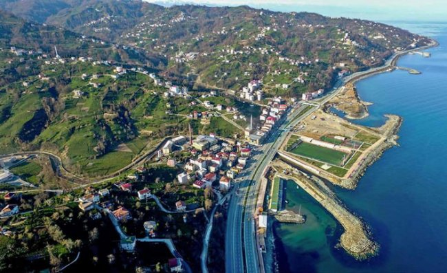

İlçenin adı, 1583 yılı kayıtlarında Filandoz, 1902 yılı kayıtlarında ise Filyandos olarak geçmektedir olarak geçmektedir.1949 yılında bucak statüsü alan Derepazarı, 13 Mart 1954'te Sarıyar, Tersane, Lazkoz ve Eriklimanı köyleri ile birleşerek belediye statüsü aldı ve beldeye dönüştü.Derepazarı, 20.05.1990 tarih ve 20523 sayılı resmi gazetede yayımlanan kanun ile ilçe statüsüne kavuştu.
İlçe ekonomisi genellikle çay üretimine ve Çay Fabrikasında çalışan işçilerin mevsimlik işine bağlıdır. Özellikle yaz aylarında Çay Fabrikalarının mevsimlik çalışmaya başlamasından sonra ekonomide bir canlılık dikkat çeker. Rize’nin çok yakın ve ulaşımının ekonomik olmasından dolayı halkın birçoğu ihtiyaçlarını vilayetten karşıladığından, ticaret olması gerektiği noktadan çok geride kalmıştır. İlçede sanayi ağaç ürünlerine daha baskındır.
Derepazarında Devletin himayesinde olan 2 Çay-kur çay fabrikasının yanında, 4 tane de özel sektör çay fabrikası bulunmaktadır. Derepazarı küçük bir ilçe olmasına rağmen 6 adet çay fabrikasından ve çay üretiminden dolayı özellikle yaz aylarında ekonomik hayat canlanmaktadır. Dolayısıyla Çay sanayi İlçe ekonomisinin can damarı durumundadır.